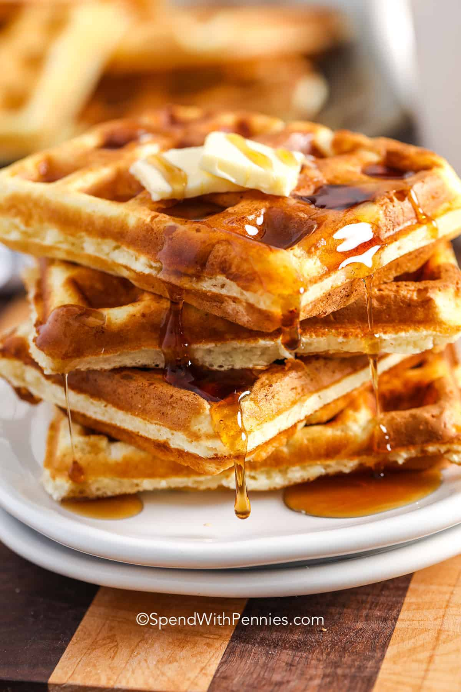

Go to index
Homemade Waffles

This Homemade Waffle recipe uses just a handful of ingredients that you likely have on hand already. They’re fluffy on the inside, perfectly crisp on the outside, and these waffles are delicious drizzled with melted butter and syrup.
Ingredients
- 2 cups all purpose flour
- 1 tablespoon baking powder
- ½ teaspoon salt
- 2 tablespoons sugar
- 2 large eggs divided
- 1 ⅔ cups milk
- ⅓ cup melted butter or oil
- 1 teaspoon vanilla extract
Instructions
- Preheat the waffle iron according to the manufacturer's directions (or to 400°F if your waffle maker has a temperature gauge).
- Place flour, baking powder, sugar, and salt in a large bowl. Whisk to combine.
- In a small bowl, mix egg yolks, milk, butter, and vanilla extract. Set aside.
- In a separate medium bowl, beat egg whites with a mixer on medium high speed until stiff peaks form.
- Add the egg yolk mixture to the dry ingredients and stir to combine. Gently fold in the egg whites.
- Drop by large spoonfuls onto greased waffle iron until most of the wells are covered. Close the lid and cook for about 3-5 minutes or until golden brown.
Source: Homemade Waffles